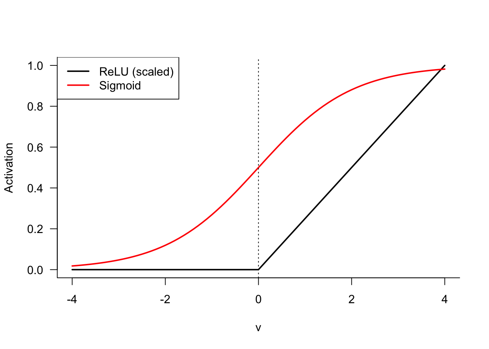
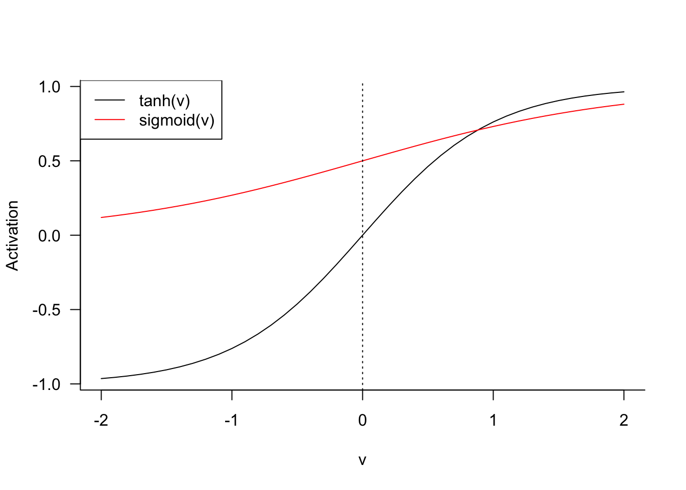

{kind=link}
{kind=link}
{kind=link}
{kind=link}

31 Artificial Neural Networks
31.1 Introduction
A Look Back
Few analytic methods have occupied conversations in recent years as neural networks. They seem at times inscrutable and complex, and mysteriously powerful. Yet neural networks, or better artificial neural networks (ANN), had their ups and downs since the perceptron was described by McCulloch and Pitts (1943).
Once, ANNs were thought to hold the key to artificial intelligence (AI) and that within a short period of time machines based on neural networks would be capable to perform any task. These exuberant expectations could not be met. From the peak of inflated expectations the field of AI slumped into the trough of disillusionment and the first AI winter had set in. It was not fashionable in the 1980s or 1990s to say you were working on artificial intelligence. Neural networks were just another supervised learning approach to predict or classify a target variable. Compare the situation to today, when it is not fashionable to say you are working on anything but AI.
Then, around 2010, everything changed—again. Classification models built on specialized neural networks improved greatly in performance. In 2012, AlexNet, a convolutional neural network (CNN, a special type of artificial neural network for image data), had the best top-5 error rate in the annual ImageNet competition, beating out human interpreters for the first time. The task in the ImageNet competition is to recognize the objects on images and correctly associate them with 1,000 categories.
This was a watershed moment in the history of artificial intelligence. Algorithms outperforming their human masters is not too surprising to us. After all, we build algorithms of all kinds for exactly that purpose: to perform a task repeatedly and reliably at a scale beyond human capacity. Who would want to trade a calculator for doing arithmetic themselves? The watershed moment occurred because an ANN bested human interpreters in a task that many previously thought was squarely in the human domain: sensing the world.
Up until now, computerized systems and algorithms were great at solving problems that are difficult for humans but easy for computers. Those are problems that can be described by formal rules and logic. Performing mathematical operations and capturing the tax code in software are examples.
The CNN that won ImageNet solved a problem that is easy for humans but was so far difficult for computers: interpreting the natural world. We can look at the world and immediately recognize the objects in our field of vision: a tree here, a person there–we might know their name–, a flower pot on top of a table. This task requires a large amount of knowledge about the world, yet it is something we can do intuitively. How was it possible that now an algorithm trained on data had become better at this task than us?
Had it really?
AlexNet had not become more knowledgeable about the world. The ANN was not capable of synthesizing information and concepts and deriving the nature of objects from it. It was not intelligent. The ANN was trained to be a pattern matching machine. Using many labeled training examples, where the objects on an image had been identified by humans for the benefit of the algorithm, the network learned to associate labels with certain patterns in the image pixels. When presented with a new image, the algorithm can then map the presented pixels against the learned associations and predict with surprising accuracy which objects it “sees” on the image.
The pattern matching that occurs in our brains intuitively based on colors, shapes, edges, movement, context, etc., had been replaced with a crude pattern matching based on pixels. Exchange the pixels with some other means of encoding the visual information, and the neural network would fail miserably, unless it is retrained on the new type of data.
Still, training an algorithm to perform a complex task as image recognition so well was remarkable. Other examples of neural network-based algorithms moving into the domain of easy-for-human specialties came from the fields of robotics, autonomous operations (driving), natural language understanding (reading, writing, summarization, interpretation), etc. That begged the questions
How was this possible?
Why now? Neural networks had been around since the 1940s? Why did it take another 6 decades to improve their performance. Regression has been around for a long time as well and it is not as if we are suddenly experiencing a massive “regression revolution”.
What Changed?
Several major developments came together to raise the performance and profile of neural networks.
The availability of large training data sets
The availability of computing resources
Specialized network architectures
Better algorithms to train neural networks with greater depth
Dedicated software packages for deep learning
The performance of neural networks to this point had been limited by the size of the networks and the computational resources required to train them. While a large statistical model might have a thousand parameters, this would constitute a pretty small neural network by today’s standards. Networks consist of layer and those with more layers, so-called deep neural networks, tend to abstract concepts better than shallow networks. This increases the number of parameters dramatically, however. Millions of parameters is not uncommon in deep neural networks. GPT-1, released in June 2018 had 117 million parameters. GPT-2, released in February 2019 had 1.5 billion parameters. GPT-3.5, released in November 2022 featured 175 billion parameters.
The internet facilitated the collection (vacuuming) of data. In object classification, acceptable performance can be achieved with about 5,000 training observations for each category to be classified. If you want an algorithm to be good at identifying cats, you need 5,000 pictures of cats. To achieve human-level performance in categorization you need about 10 million observations. The massive data sets needed to train deep neural networks well are now available. The rise of the large language models (LLMs) such as GPT would probably not have been possible without the internet as the training data.
Estimating such a large number of parameters is a formidable problem, made more complex by the nonlinear nature of neural networks and their over-parameterization. A single computer limits the size of networks that can be trained. Distributed computing platforms in which relatively cheap compute servers are stitched together into large high-performance computing arrays provided the necessary horsepower to train large networks. Cloud computing made these computing resources widely available to anyone with a credit card.
Maybe more importantly, the use of GPUs (graphical processing units) instead of CPUs changed the computational equations. It turns out that much of the math in training neural networks is similar to the type of vector operations that occur in processing images. The GPU chips that accelerated graphics operations have become the dominating chip architecture for AI models. NVIDIA, maker of GPUs, evolved from a company supporting video gaming and graphics rendering to one of the most valuable companies on the planet. Its market capitalization was about $10 billion in 2014. It has eclipsed $3 trillion in June 2024. As of this writing, NVIDIA is worth more than Meta, Tesla, Netflix, AMD, Intel, and IBM combined.
Initially, neural networks were used to process continuous input data, not unlike traditional regression or classification methods. The earliest applications of neural networks was as binary classifiers. Specialized networks were developed to process unstructured data such as text, images, audio. Convolutional neural networks revolutionized image processing and recurrent neural networks had a large impact on natural language processing. Increasingly, these architectures are now being replaced by transformer models such as GPT, BERT, or LLama.
Because sensing the world and operating in it takes more brain than brawn, and partly because the term neural network invoked comparisons with human brain function, it was thought that—finally—machines are besting us and coming for us. The era of artificial general intelligence (AGI) was finally upon us. Not so fast.
Well, that did not happen, and it probably never will based on algorithms just trained on data. Although we are today experiencing another massive shift in AI capabilities thanks to transformer models. These are basically very complex forms of artificial neural networks. Still, I firmly believe that no artificial general intelligence (AGI) will be based on a probabilistic prediction algorithm trained on historical data.
Neural networks do not mimic the functioning of the human brain. Their fundamental building block is called a neuron, and that is where the similarities end. A neuron in an ANN does not at all work like a neuron in the brain. At best a parallel can be drawn because neurons in an ANN are connected and “activated” through weights.
So let’s start figuring out what makes artificial neural networks tick.
The Basics
Artificial neural networks are supervised learning tools. Like other techniques in this family of algorithms they convert an input material (data) through an algorithm into the prediction or classification of a target variable (Figure 31.1).
Neural networks can take as input any type of data and produce any type of output. Figure 31.1 displays this as predicting or classifying a target variable \(Y\), but keep in mind that such a prediction could also be the most likely word in the translation of an input sequence of words into an output sequence of words in a different language. The stuff that happens in between input and output is organized in layers of transformations. The output of one layer is the input to the next layer. Each layer is associated with parameters, linear predictors, and nonlinear transformations.
A network with a single hidden layer is shown in Figure 31.2. This brings the total number of layers in the network to three:
- an input layer with data
- a hidden layer that transforms the input data somehow and passes it on to an output layer
- an output layer that transforms the results from the hidden layer into the goal of the analysis, a prediction or a classification.
The earliest networks were called perceptrons, they did not have a hidden layer. A single layer perceptron thus processes the input data and transforms it directly into the output (Figure 31.3).
That sounds a lot like any other statistical model where the mean of the target is modeled as a function of inputs and parameters: \[ \text{E}[Y] = f(x_1,x_2,\cdots,x_p,\theta_1, \cdots,\theta_k) \] Neural networks are in fact often viewed as tools to approximate unknown functions. The basic idea is that the approximation can be achieved by using a nonlinear transformation, called an activation, of a linear function. Simplifying our model we can then write \(f(x_1,x_2,\cdots,x_p,\theta_1, \cdots,\theta_k)\) as \[ g(\beta_0 + \beta_1 x_1 + \cdots\beta_p x_p) \] for some function \(g()\). It is customary in neural network analysis to refer to the coefficients of the linear predictor as bias and weights, rather than as intercept and slope coefficients (parameters). The notation \[ g(b + w_1 x_1 + \cdots w_p x_p) \] for bias (\(b\)) and weights (\(w_j\)) is common. An ANN with 1 million parameters has a combined 1 million weights and biases. Since \(g()\) operates on the predictor of the output layer, it is called the output activation function.
We now see that a simple linear regression model is a special case of an artificial neural network:
- there are no hidden layers
- the output activation function is the identity (also called linear activation)
A multinomial logistic regression model for \(k\) categories works similarly, but now the output is a probability of class membership. Instead of a single linear predictor, you estimate a separate predictor \[ \eta_j = b_j + w_{j1} x_1 + \cdots + w_{jp} x_p \qquad j=1,\cdots,k \] The output activation function is \[ g_j(\eta) = \frac{\exp\{\eta_j\}}{\sum_{l=1}^k\exp\{\eta_l\}} \] known as the softmax activation. The \(g_j()\) are now interpreted as category probabilities and an observation is classified into the category for which \(g_j\) is largest. Note that \(g()\) is a nonlinear function that serves two purposes: it makes the relationship between input variables and category probabilities nonlinear and it maps the linear predictors from the real line to the \([0,1]\) interval.
31.2 Single Layer Networks
Perceptrons proved to be limited in the number of categories (classes) they can learn. As a binary classifier, they required linear separability of the classes. Handling more complex problems was solved by the introduction of additional layers, known as hidden layers. The basic form of an artificial neural network today is the single layer network that consists of an input layer, a single hidden layer, and an output layer (Figure 31.4).
Note
The distinction between single layer and multi layer network has to do with the number of hidden layers, not the total number of layers. As we will see in the discussion of deep learning, what constitutes a layer is not always clear. In convolutional neural networks, for example, a layer has multiple stages: convolution, activation, and pooling. These stages are often presented as separate layers, adding to the difficulty of exactly defining what we mean by deep learning based on the number of layers in a network.
The single layer ANN is also called a feedforward network, information flows from the input to the output layer. It is a fully connected network when all of the inputs are connected to all nodes of the hidden layer and all nodes of the hidden layer feed into the output layer.
The terms \(A_1, \cdots, A_M\) in Figure 31.4 are called the activations of the hidden layer, \(M\) is the number of nodes (=number of neurons) in that layer.
Expressing neural networks mathematically is straightforward but gets messy quickly because of the many nodes and possibly layers. Here it goes.
The input variables are \(x_1, \cdots, x_p\). Unstructured data have been converted to a numerical representation through encoding. \(\textbf{x}\) denotes the vector of inputs for a record, \(\textbf{x}= [x_1,\cdots,x_p]^\prime\).
\(A_j\), the \(j\)th neuron in the hidden layer, is modeled as \[ A_j = \sigma(b_j + \textbf{w}_j^\prime\textbf{x}) = \sigma(b_j + w_{j1} x_1 + \cdots + w_{jp} x_p) \qquad j=1,\cdots, M \] for some activation function \(\sigma()\).
The \(M\) activations are collected into a vector \(\textbf{a}= [A_1, \cdots, A_M]^\prime\)
The output layer is modeled as \[ T(\textbf{a}) = b^o+ \sum_{j=1}^M w_j^oA_j = b^o + \textbf{a}^\prime\textbf{w}^o \]
\(T(\textbf{a})\) is transformed with an output function \(g(T(\textbf{a}))\) to produce the desired analytical result.
In summary, the activations \(A_j\) are linear functions of the inputs that go through a nonlinear activation function \(\sigma()\). The transformed activations are modeled as another linear model, the output function \(g(T(\textbf{a}))\) transforms \(T\) for prediction or classification. You can think of the activations \(A_1, \cdots, A_M\) as deriving \(M\) new inputs from the \(p\) inputs \(x_1, \cdots, x_p\). There is no connection between \(M\) and \(p\), you can choose \(M\) to be larger or smaller.
There are several linear functions in the ANN, in the activations and in the output. \(\sigma()\) and \(g()\) introduce nonlinearity, but the ANN is nonlinear in the parameters (weights and biases) beyond that. Suppose that the output function \(g()\) is the identity \(g(T(\textbf{a})) = T(\textbf{a})\) (This is also called a “linear” output function although identity function is technically more accurate). In this situation \[ \begin{align*} g(T(\textbf{a})) &= b^o + \textbf{a}^\prime\textbf{w}^o \\ &= b^o + \sum_{j=1}^M w_j^o \sigma\left(b_j + \sum_{k=1}^pw_{jk} x_k \right) \end{align*} \] While \(g(T(\textbf{a}))\) appears like a linear predictor, the function is highly nonlinear in the parameters since \(\textbf{a}\) contains quantities estimated from the data. Even if \(\sigma()\) is the identity function, \(g(T(\textbf{a}))\) is nonlinear in the weights and biases. \(\sigma()\) and \(g()\) add nonlinearity beyond that.
Why are the neurons \(A_1, \cdots, A_M\) called a hidden layer? The layer is not directly specified by the training data. It is also not directly observed. We observe the \(x\)s but connect the inputs only indirectly to the output of the model. The connection to the output is made through the neurons that hide between the two. The learning algorithm can decide how to best use the hidden layer—that is, assign biases and weights.
Activation Functions
The activation function \(\sigma()\) introduces nonlinearity into a linear structure, not unlike the kernel trick encountered with support vector machines (Chapter 15).
Prior to the advent of deep learning and the discovery of ReLU, the rectified linear unit, the sigmoid (logistic) activation function was the most important in training neural networks. ReLU has since dominated. Some of the more important activation functions are shown in Table 31.1.
| Name | Function |
|---|---|
| Sigmoid (logistic) | \(\frac{1}{1+\exp\{-\nu\}}\) |
| Hyperbolic tangent | \(\tanh(\nu)\) |
| Rectified linear unit (ReLU) | \(\max\{0,\nu\}\) |
| Radial basis function | \(\exp\{-\gamma\nu^2\}\) |
| Softplus | \(\log\{1+e^\nu\}\) |
You will recognize the sigmoid activation function as the inverse logit link from generalized linear models. The sigmoid (and hyperbolic tangent) function map from \((-\infty, \infty)\) to \((0,1)\). The sigmoid function has a limited band of activation, its behavior is nearly linear around \(\nu = 0\).
The ReLU function is deceptively simple. It takes on the value 0 whenever \(\nu < 0\) and returns the value if \(\nu > 0\) (Figure 31.5). It is somewhat surprising that the ReLU function, which is almost linear, allows the approximation of arbitrary nonlinear functions. The ReLU in Figure 31.5 was scaled by factor \(1/4\) to make it comparable to the sigmoid function. ReLU is not bounded for positive values and is not useful as an output function for probabilities if the goal is to predict on the \((0,1)\) interval.
The popularity of ReLU stems from its close-to-linear behavior. The function is easy to optimize with gradient-based algorithms (although it is not differentiable at zero), generalizes well, and is just sufficiently complex to be useful. The minimal component principle in computer science says that complicated system can be built from simpler components. As Goodfellow, Bengio, and Courville (2016, 175) put it
Much as a Turing machine’s memory needs only to be able to store 0 or 1 states, we can build a universal function approximator from rectified linear functions.

The hyperbolic tangent and sigmoid functions are related. If \(\sigma_1()\) is sigmoid, then \[ \tanh(v) = 2\sigma_1(2v) - 1 = \frac{2}{1+\exp\{-2\nu\}} - 1 \]
Output Functions
The output function \(g()\) transforms the result of the output layer, \(T(\textbf{a})\) into a prediction. In a regression context, \(g()\) is often the identity function, \[ g(T(\textbf{a})) = T(\textbf{a}) \] that means no further transformation.
For classification models \(g()\) is typically the softmax function. If we model \(k\) output categories with a neural network, then each category will have a separate function \[ T_j(\textbf{a}) = b^o_j + \textbf{a}^\prime\textbf{w}^0_j \] and the softmax function transforms them into values in \((0,1)\), \[ g(T_j(\textbf{a})) = \frac{\exp\{T_j(\textbf{a})\}}{\sum_{l=1}^k \exp\{T_l(\textbf{a})\}} \] In other words, the output layer has \(k\) neurons and their “probabilities” sum to 1: \(\sum_{j=1}^k g(T_j(\textbf{a})) = 1\). The classified value of the output is the category \(j\) for which \(g(T_j(\textbf{a}))\) is largest.
The softmax output function should look familiar, we encountered a similar function in multinomial logistic regression models. The probability to observe category \(j\) of \(k\) is modeled in a multinomial logistic model as \[ \Pr(Y=j | \textbf{x}) = \frac{\exp\{\textbf{x}^\prime\boldsymbol{\beta}_j\}}{\sum_{l=1}^k \exp\{\textbf{x}^\prime\boldsymbol{\beta}_l\}} \tag{31.1}\]
Because the probabilities sum to 1 across all categories, it is sufficient to model \(k-1\) category probabilities. In multinomial regression models it is common to set the linear predictor for one of the categories to 0. Suppose we choose the last category, so that \(\boldsymbol{\beta}_k = \textbf{0}\). Equation 31.1 then becomes \[ \begin{align*} \Pr(Y=j | \textbf{x}) &= \frac{\exp\{\textbf{x}^\prime\boldsymbol{\beta}_j\}} {1 +\sum_{l=1}^{k-1} \exp\{\textbf{x}^\prime\boldsymbol{\beta}_l\}} \qquad j < k\\ \Pr(Y=k | \textbf{x}) &= \frac{1}{1 +\sum_{l=1}^{k-1} \exp\{\textbf{x}^\prime\boldsymbol{\beta}_l\}} \\ \end{align*} \]
Statisticians are familiar with this form than the softmax version that allows for a predictor in all categories—neural networks are often over-parameterized.
ANN by Hand
It is instructive to work through a simple neural network by hand to see how inputs, weights, biases, hidden neurons, activation and output functions work together to map inputs into output. Figure 31.7 shows a simple single layer network with 3 inputs, 4 neurons in the hidden layer, and a single output for prediction. ReLU is used for the activation and the output function.
This is essentially a regression context where we build a shallow neural network to predict \(Y\) from \(X_1, X_2, X_3\).
{kind=link}
Suppose we have a single input vector (\(n=1\)) \(\textbf{x}= [2, 1, 3]^\prime\) and the parameters for the neural network are given as (Figure 31.8) \[ \begin{align*} A_1: b_1 &= -5 \quad \textbf{w}_1 = [1, -1, 1]^\prime \\ A_2: b_2 &= 0 \quad \textbf{w}_2 = [1, 1, 0]^\prime \\ A_3: b_3 &= 1 \quad \textbf{w}_3 = [0, 1, 1]^\prime \\ A_4: b_4 &= -2 \quad \textbf{w}_4 = [1, 0, 1]^\prime \\ T: b^0 &= 1 \quad \textbf{w}^o = [1, 2, -1, 0]^\prime \end{align*} \]
{kind=link}
Figure 31.9 applies the parameter values to compute the activations \(A_1, \cdots, A_4\), applies the ReLU function and passes the results to the output layer.
{kind=link}
The activations from the hidden layer, after the ReLU is applied, are \(A_1 = 0\), \(A_2 = 3\), \(A_3 = 5\) and \(A_4 = 3\). The value in the output layer is \(T(\textbf{a}) = b^0 + w_1^0 A_1 + \cdots + w_4^0 A_4\) = 2. Because it is positive, the ReLU output function \(g(T(\textbf{a})) = \max\{0,T(\textbf{a})\}\) returns 2 as the predicted value.
The XOR Gate
Neural networks have many parameters, frequently more parameters than observations. How is that possible, does that not create a singular situation where solutions are not unique and the model is saturated (perfect fit)? That is true for linear models, a linear regression with \(p\) inputs and \(n= p+1\) observations is a saturated model with zero residual error. Add another input or take away an observation and a least-squares solution cannot be found.
This is not so with nonlinear models, you can find a minimum of the objective function for an over-specified nonlinear model; and it does not necessarily produce a perfect fit at the solution.
Suppose we train a single layer network with \(p=10\) inputs, a single output (regression), and a hidden layer with \(M=100\) nodes. How many parameters are in this model?
The input layer fully connects 10 inputs to 100 hidden units. Each of the \(A_1, \cdots, A_M\) has 11 parameters, a weight for each of the input variables and a bias. So there are 1,100 parameters in the hidden layer.
The hidden layer passes 100 activations to the output layer, which adds a weight for each activation and a bias, another 101 parameters.
The total number of quantities estimated in this fairly simple neural network is 1,100 + 101 = 1,201. Note that this number is independent of the number of observations in the training data. Even with \(n=20\), the ANN (attempts to) estimates 1,201 quantities.
As an example of an over-specified neural network that can be solved with a more parsimonious modeling alternative, we consider the famous XOR example.
The exclusive OR (XOR) function is a logic gate that can be modeled as follows. Take two binary inputs \(X_1 \in \{0,1\}\) and \(X_2 \in \{0,1\}\). The XOR gate takes on the value \(Y=1\) if exactly one of the \(X\)s is 1, otherwise the gate is \(Y=0\). The following table shows the four possible states of the gate.
| Obs # | \(X_1\) | \(X_2\) | \(Y\) |
|---|---|---|---|
| 1 | 0 | 0 | 0 |
| 2 | 0 | 1 | 1 |
| 3 | 1 | 0 | 1 |
| 4 | 1 | 1 | 0 |
The goal is to construct a neural network with one hidden layer with \(M=2\) units, ReLU activation and identity (“linear”) output function (Figure 31.10). The network should model the XOR gate correctly—that is, provide a perfect fit to the data in Table 31.2.
{kind=link}
The network has nine parameters and the following structure \[ \begin{align*} A_1 &= \max \{ 0, b_{1} + w_{11}x_1 + w_{21}x_2 \} \\ A_2 &= \max \{ 0, b_{2} + w_{21}x_1 + w_{22}x_2 \} \\ T &= b^o + w^o_1 A_1 + w^o_2 A_2 \\ g(T) &= T \end{align*} \]
You can easily verify that the following values are a solution (Table 31.3) \[ \begin{align*} b_1 &= 0, \textbf{w}_1 = [1,1] \\ b_2 &= -1, \textbf{w}_2 = [1,1] \\ b^o &= 0, \textbf{w}^o = [1, -2] \end{align*} \]
| Obs # | \(X_1\) | \(X_2\) | \(A_1\) | \(A_2\) | \(Y\) |
|---|---|---|---|---|---|
| 1 | 0 | 0 | 0 | 0 | 0 |
| 2 | 0 | 1 | 1 | 0 | 1 |
| 3 | 1 | 0 | 1 | 0 | 1 |
| 4 | 1 | 1 | 2 | 1 | 0 |
This is great. A neural network with 9 parameters was able to predict the exclusive OR gate. Is there a more parsimonious option?
Goodfellow, Bengio, and Courville (2016, 173) state that a linear model is not capable of fitting the XOR gate. This is correct if one considers a main-effects only model as in the following code
dat <- data.frame(x1=c(0,0,1,1), x2=c(0,1,0,1), y=c(0,1,1,0))
dat x1 x2 y
1 0 0 0
2 0 1 1
3 1 0 1
4 1 1 0reg_main <- lm(y ~ x1 + x2, data=dat)
summary(reg_main)
Call:
lm(formula = y ~ x1 + x2, data = dat)
Residuals:
1 2 3 4
-0.5 0.5 0.5 -0.5
Coefficients:
Estimate Std. Error t value Pr(>|t|)
(Intercept) 5.00e-01 8.66e-01 0.577 0.667
x1 1.11e-16 1.00e+00 0.000 1.000
x2 0.00e+00 1.00e+00 0.000 1.000
Residual standard error: 1 on 1 degrees of freedom
Multiple R-squared: 3.698e-32, Adjusted R-squared: -2
F-statistic: 1.849e-32 on 2 and 1 DF, p-value: 1The linear regression model \(y = \beta_0 + \beta_1 x_1 + \beta_2 x_2\) does not provide a solution, otherwise it would result in a perfect fit. Instead, it has non-zero residuals. However, if you allow \(X_1\) and \(X_2\) to interact, then the linear model fits the XOR gate perfectly. In fact, you can also remove the intercept and model the gate with only three parameters:
reg_ia <- lm(y ~ x1 + x2 + x1*x2 -1, data=dat)
summary(reg_ia)
Call:
lm(formula = y ~ x1 + x2 + x1 * x2 - 1, data = dat)
Residuals:
1 2 3 4
-1.178e-16 -1.424e-32 1.298e-32 6.588e-34
Coefficients:
Estimate Std. Error t value Pr(>|t|)
x1 1.000e+00 1.178e-16 8.489e+15 <2e-16 ***
x2 1.000e+00 1.178e-16 8.489e+15 <2e-16 ***
x1:x2 -2.000e+00 2.040e-16 -9.802e+15 <2e-16 ***
---
Signif. codes: 0 '***' 0.001 '**' 0.01 '*' 0.05 '.' 0.1 ' ' 1
Residual standard error: 1.178e-16 on 1 degrees of freedom
Multiple R-squared: 1, Adjusted R-squared: 1
F-statistic: 4.804e+31 on 3 and 1 DF, p-value: < 2.2e-16round(predict(reg_ia),3)1 2 3 4
0 1 1 0 Notice that the model \[ Y = \beta_1 x_1 + \beta_2 x_2 + \beta_3 x_1x_2 \] has zero residual error (all residuals are zero) but still has one degree of freedom left for the error term. It fits perfectly but not by saturating the model with parameters. The parameter estimates are \(\widehat{\beta}_1 = 1\), \(\widehat{\beta}_2 = 1\), and \(\widehat{\beta}_3 = -2\). The fitted equation is \[ \widehat{Y} = x_1 + x_2 - 2 x_1 x_2 \]
| Obs # | \(X_1\) | \(X_2\) | \(X_1X_2\) | \(Y\) | \(\widehat{Y}\) |
|---|---|---|---|---|---|
| 1 | 0 | 0 | 0 | 0 | 0 |
| 2 | 0 | 1 | 0 | 1 | 1 |
| 3 | 1 | 0 | 0 | 1 | 1 |
| 4 | 1 | 1 | 1 | 0 | 0 |
| \(\beta\) | 1 | 1 | -2 |
I leave it up to you to decide which model is preferable (Figure 31.11):
\[ Y = \beta_1 x_1 + \beta_2 x_2 + \beta_3 x_1x_2 \]
or
\[ \begin{align*} A_1 &= \max \{ 0, b_{1} + w_{11}x_1 + w_{21}x_2 \} \\ A_2 &= \max \{ 0, b_{2} + w_{21}x_1 + w_{22}x_2 \} \\ T &= b^o + w^o_1 A_1 + w^o_2 A_2 \\ g(T) &= T \end{align*} \]
The linear model has a closed-form solution and no tuning parameters. The ANN is a nonlinear model and you have to choose \(M\), the number of hidden units as well as the activation function \(\sigma()\) and the output function \(g()\).
{kind=link}
Finally, the neural network solution is not unique, other combinations of weights and biases lead to a solution. For example, \[ \begin{align*} b_1 &= 0, \textbf{w}_1 = [1,-1] \\ b_2 &= -1, \textbf{w}_2 = [-1,2] \\ b^o &= 0, \textbf{w}^o = [1, 1] \end{align*} \] is also a solution (Table 31.5).
| Obs # | \(X_1\) | \(X_2\) | \(A_1\) | \(A_2\) | \(T=A_1+A_2\) |
|---|---|---|---|---|---|
| 1 | 0 | 0 | 0 | 0 | 0 |
| 2 | 0 | 1 | 0 | 1 | 1 |
| 3 | 1 | 0 | 1 | 0 | 1 |
| 4 | 1 | 1 | 0 | 0 | 0 |
That is a common problem in over-parameterized neural networks. The objective function surface has mutiple local extrema. Training algorithms can get stuck in one of the many local solutions and might never see the global solution. This phenomenon is so common with neural networks that many data scientists simply accept any solution to the estimation problem.
31.3 Multi Layer Networks
A single layer network can in theory approximate most functions, provided the hidden layer has enough neurons (=units). But networks with more than a single layer are often able to use fewer units per layer and can generalize well with fewer parameters overall. Increasing the depth of the network tends to be more effective than increasing the width of the network, although counter examples are easy to find.
Modern neural networks have more than one hidden layer, we call them multi layer networks. In general, when the number of layers is greater than two, the networks are referred to as deep neural networks (DNN). This is not an established definition of DNNs, in part because it is sometime not clear what is being described as a layer. For example, in convolutional neural networks three processing stages alternate—convolution, activation, and pooling. The number of layers varies greatly depending on whether the stages are seen as separate layers or not.
Besides pooling and convolving, the assumption in convolutional neural networks is that deeper layers learn increasingly higher-level abstractions of the data. The layers represent a nested hierarchy of concepts—edges, shapes, etc—with more abstract representations computed in terms of simpler ones. This idea of abstraction into hierarchy of concepts favors deeper multi layer networks over wider networks with fewer layers.
In the chapter on deep learning we will encounter layers with many different purposes (Chapter 34). Examples are
- convolutional layers
- pooling layers
- dropout layers
- flattening layers
- fully connected layers
- regularization layers
- normalization layers
- attention layers
- recurrent layers
- long short-term memory layers
- embedding layers
In this section, multiple layers are simple fully-connected hidden layers. The first hidden layer with \(M_1\) neurons passes its output to a second hidden layer with \(M_2\) neurons and so forth. Figure 31.12 shows a fully connected ANN with two hidden layers with \(M_1=4\) and \(M_2=3\) neurons, respectively.
{kind=link}
Mathematically we can present multi layer networks as chaining transformations. Let’s use superscripts in parentheses to denote the activations in the hidden layers. For example, \(A^{(1)}_j\) is the activation of neuron \(j\) in the first hidden layer, \(A^{(3)}_{M_3}\) is the activation of the last neuron in the third hidden layer.
The full network with \(h\) hidden layers can be written as follows: \[ \begin{align*} A^{(1)}_j &= \sigma^{(1)}\left( b^{(1)}_j + \textbf{w}^{(1)}_j\textbf{x}\right) \qquad j=1,\cdots,M_1 \\ \textbf{a}^{(1)} &= [A^{(1)}_1,\cdots, A^{(1)}_{M_1}] \\ A^{(2)}_j &= \sigma^{(2)}\left( b^{(2)}_j + \textbf{w}^{(2)}_j\textbf{a}^{(1)} \right) \qquad j=1,\cdots,M_2 \\ \textbf{a}^{(2)} &= [A^{(2)}_1,\cdots, A^{(2)}_{M_2}] \\ \vdots \\ A^{(h)}_j &= \sigma^{(h)}\left( b^{(h)}_j + \textbf{w}^{(h)}_j\textbf{a}^{(h-1)} \right) \qquad j=1,\cdots,M_h \\ \textbf{a}^{(h)} &= [A^{(h)}_1,\cdots, A^{(h)}_{M_h}] \\ g(T(\textbf{a}^{h})) &= g(b^o+\textbf{w}^o\textbf{a}^{(h)}) \end{align*} \]
This looks messier than it is:
- Each hidden layer has its own set of biases and weights.
- Each layer can have a different activation function \(\sigma^{(1)}, \cdots, \sigma^{(h)}\). Frequently, they are the same function throughout the hidden layers.
- Only the first hidden layer consumes the inputs \(\textbf{x}\). Subsequent hidden layers consume as input the output of the previous hidden layer.
- Only the final hidden layer feeds directly into the output layer. The other hidden layers contribute indirectly to the output through their impact on the final hidden layer.
- Each hidden layer can have a different number of neurons.
31.4 A First Look at MNIST Image Classification
The MNIST image classification data is a famous data set of hand-written digits from 0–9, captured as 28 x 28 grayscale pixel images. The data set comprises 60,000 training observations and 10,000 test observations and is the “Hello World” example for computer vision algorithms. The MNIST database was constructed from NIST’s Special Database 3 (SD-3) and Special Database 1 (SD-1), 30,000/5,000 test/train images were chosen from SD-3, collected from Census Bureau employees, and 30,000/5,000 test/train images were chosen from SD-1, collected from high-school students.
Every computer vision algorithm is tested against the MNIST data set and another famous benchmark, the CIFAR data sets. MNIST data is available from multiple sites, e.g., here, and is also distributed with many deep learning frameworks.

Figure 31.13 displays a sampling of the images in the data set for each of the ten digits. Many classification methods have been applied to the MNIST data, including various artificial neural networks—check the table on Yann LeCun’s web site for approaches and their error rates. Many approaches ignore the spatial arrangement of the 28 x 28 pixels on each image and treats each record as 28 x 28 = 784 grayscale values. They still have admirable error rates.
A neural network with two hidden layers, comparing 128 and 64 hidden units, respectively, is shown in Figure 31.14.
{kind=link}
There are 784 input variables, \(x_1, \cdots, x_{784}\), corresponding to the 784 pixel locations on each image. The first hidden layer has 128 neurons and ReLU activation. Consequently, there are 128 x 785 = 100,480 parameters in that layer (784 weights plus a bias for each neuron). The second hidden layer has 64 neurons and ReLU activation, adding 64 * 129 = 8,256 parameters. The output layer has a softmax output function because each image needs to be classified into one of 10 categories, adding 10 * 65 = 650 parameters. The total number of parameters in this two layer ANN is 100,480 + 8,256 + 650 = 109,386. The final layer in Figure 31.14 is shown as a cross-entropy layer. This simply means that the values (probabilities) associated with the softmax criterion in the output layer is used to choose as the classified value the digit for which the probability is largest.
In the next chapter we demonstrate that this model has a test accuracy of more than 96%, which is quite remarkable, considering that no spatial information about the pixels is explicitly taken into account. The 28 x 28 grayscale values are simply stretched into a vector of size 784 and processed without considering a value’s neighborhood of grayscale values.
Before we crunch the numbers for the MNIST data set, a few words about the process of training neural networks.